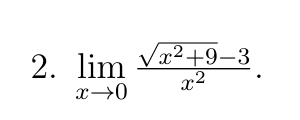
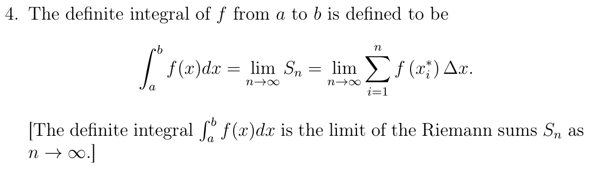
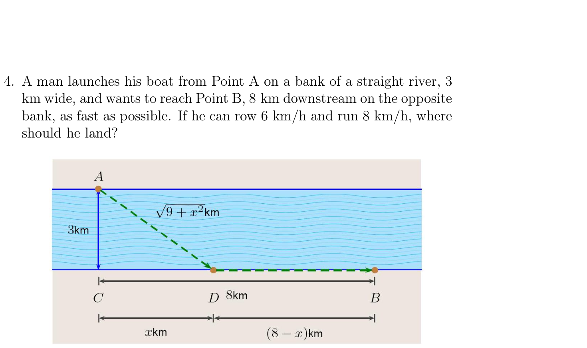
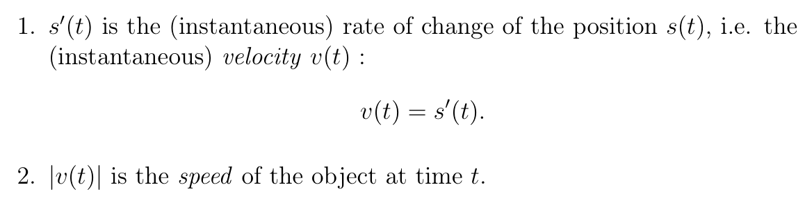
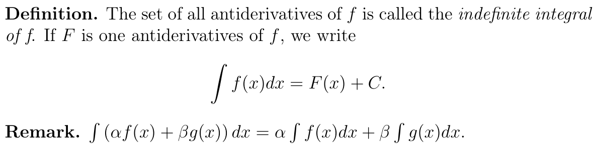

原题 + 答案 + 逐步解析 + 专题分析，按「模块 → 专题 → 知识板块」三级组织在一个页面里｜2022 / 2024 / 2025 三年期中真题｜已按 2026 秋期中范围 TC §2.1–5.2（不含 §2.3）裁剪
每个专题下面都有一组知识板块，全部从教授笔记里按页摘出来（标了 笔记 §x · p.y 与对应的 Thomas' Calculus 章节），先看板块再刷该专题的题。
笔记第 2–3 章 · TC §2.2–2.6
极限是后面每一个工具的定义基础；连续性判定与介值定理是「证明方程确实有根」这一类题唯一的依据。这一块不过关，后面全是空中楼阁。
若 lim₍x→ c₎f(x)=L、lim₍x→ c₎g(x)=M，则和、差、积、常数倍、幂的极限都可逐项运算；商的极限为 L/M，但要求分母极限 M≠ 0。多项式 P 满足 lim₍x→ c₎P(x)=P(c)，有理函数 P/Q 在 Q(c)≠ 0 时同样直接代入求值。
考场拿到题先试代入，只有分母为 0 才进入消零因子或有理化的流程。商的定理带 M≠ 0、幂的定理带 L⁽m/n⁾ 为实数这两个附加条件，判断题最爱在这里挖坑。
If lim f = L and lim g = M, limits combine term by term; polynomials and rational functions with nonzero denominator are evaluated by direct substitution.

f 在 c 处可以没定义，只要在 c 附近其余点有定义就行；先把分子分母中在 c 处为 0 的公因子约掉，再代入。根式差用共轭因子上下同乘，把根号消掉。
考场有理化之后剩下的一截常常还要再约一次因子，别停在第一步。立方差用 a³-b³=(a-b)(a²+ab+b²) 拆出 (a-b) 与分母约掉，是同一套流程。
Cancel the factor that vanishes at c, or multiply by the conjugate, then substitute.
若在 c 附近（c 本身可除外）恒有 g(x)≤ f(x)≤ h(x)，且 lim g=lim h=L，则 lim f=L；把 ≤ 换成 < 结论照样成立。推论：若 lim₍x→ c₎f(x)=0 而 g 在 c 附近有界（|g(x)|≤ M），则 lim(fg)=0。
考场看到 x²sin(1/x)、(x³-25x)cos(ln|x-5|) 这类「振荡有界量 × 趋零量」，直接写有界×无穷小=0，不必去算振荡部分。夹逼对单侧极限和 x→±∞ 同样有效，sin x/x→0 就是这么来的。
Sandwich between two functions with the same limit; a bounded factor times a null factor tends to 0.
右极限 x→ c⁺ 与左极限 x→ c⁻ 分别定义，迄今所有结论（含夹逼定理）对单侧极限都成立。lim₍x→ c₎f(x)=L 当且仅当左右极限都存在且都等于 L。笔记例子 f(x)=((x+3)|x+2|)/(x+2) 在 c=-2：右侧化为 x+3→ 1，左侧化为 -(x+3)→ -1，两侧不等，极限不存在。
考场分段函数先看分界点归哪一段，再各代各的表达式。含参数时把左右极限都算出来令其相等解出参数，最后代回验算两侧确实相等——只算一边就下结论是最常见的丢分点。
A two-sided limit exists iff both one-sided limits exist and agree; evaluate each branch of a piecewise function separately.
笔记把这三个极限放在单侧极限一节作例题：lim₍x→ 0₎(sin x)/(x)=1，lim₍x→ 0₎(cos x-1)/(x)=0；把 x 换成 4x 即得 lim₍x→ 0₎(sin 4x)/(8x)=(1)/(2)。
考场用 sin u/u→ 1 时，分子的 u 与分母必须逐字相同，多出来的系数要靠换元配平，不能凭感觉约掉。cos x-1 那一型乘共轭 1+cos x 化成 (sin² x)/(x(1+cos x))，再拆成两个已知极限相乘。
The two standard trig limits at 0: sin x / x = 1 and (cos x − 1)/x = 0, with arguments matched by substitution.
x→ c 时 f(x) 也可以趋于 ∞ 或 -∞（笔记 §2.8，p.14）。x→±∞ 的有理函数 P/Q，做法是分子分母同除以分母的最高次幂，再用 lim₍x→±∞₎1/x=0，如 (4x³-3x)/(5x³+x²+5)→(4)/(5)。夹逼对 x→∞、x→-∞ 同样成立，由此得 (sin x)/(x)→ 0。
考场最高次幂的奇偶决定符号：奇次幂在 x→-∞ 时会变号，照抄 x→∞ 的答案就差一个负号。先约分再判断——(x²-3x+2)/(x³-2x²)=(x-1)/(x²)，x→ 0 时分子→ -1、分母→ 0⁺，结果是 -∞ 而不是 +∞。
Divide by the highest power of the denominator; watch the sign for odd powers and when the denominator tends to zero from one side.
lim₍x→∞₎f(x)=b 或 lim₍x→-∞₎f(x)=b 给出水平渐近线 y=b，一个函数可以有两条。x→ a⁻ 或 x→ a⁺ 的极限为 ±∞ 时，x=a 是竖直渐近线。斜渐近线 y=Ax+B 由 A=lim(f(x))/(x)、B=lim(f(x)-Ax) 两步求出。
考场只算 A 不算 B 是典型漏步：y=x+√(x) 有 A=1，但 B=lim√(x)=∞，结论是没有斜渐近线。笔记另一例 y=(x²-3)/(2x-4) 算出 A=(1)/(2)、B=1，答案是 y=(x)/(2)+1。两个极限只要有一个不存在，就没有斜渐近线。
Horizontal from limits at ±∞, vertical where a one-sided limit blows up, oblique from A = lim f/x and B = lim(f − Ax), both of which must exist.
f 在 c 连续即 lim₍x→ c₎f(x)=f(c)，判定三条件是 f(c) 存在、极限存在、两者相等，区间端点换成对应的单侧极限。不连续点分三类：可去（极限是实数 L 但不等于 f(c)）、跳跃（左右极限为两个不同的实数）、本性（某个单侧极限不是实数）。把 f(c) 补定义成那个极限值 L，就得到连续延拓。
考场先算左右极限再分类：两个有限且相等是可去，有限但不等是跳跃（lfloor xrfloor 在每个整数点），出现 ±∞ 或不存在是本性（1/x² 在 0）。求 lim g(f(x)) 时，只有外层 g 连续才能把 lim 移进函数里面（笔记 §3.3，p.23）。
Continuous means the limit equals the value; discontinuities are removable, jump, or essential according to the one-sided limits.
f 在 [a,b] 上连续且 f(a)≠ f(b)，则 f(a) 与 f(b) 之间的任何值 y₀ 都被取到，即存在 c∈(a,b) 使 f(c)=y₀。特例：f(a)<0<f(b) 时存在 c 使 f(c)=0，这就是「证明根存在」的标准依据。定理只保证存在性，不给出 c 的值，且这样的 c 可能不止一个。
考场证根存在的三步：确认函数在闭区间上连续、挑两个端点使函数值异号、引用 IVT。跳掉连续性这一步论证就无效——笔记 p.26 专门给了 Warning。
A continuous function on [a,b] hits every intermediate value; a sign change forces a root, but IVT never says where it is.

n 项和 ∑ᵢ₌₁ⁿf(xᵢ⁽*⁾)Δ x 是 [a,b] 上的黎曼和，其中 Δ x=(b-a)/(n)、xᵢ=a+i(b-a)/(n)，样点 xᵢ⁽*⁾ 可取小区间内任一点。定积分定义为它的极限：∫ₐᵇ f(x)dx=lim₍n→∞₎∑ᵢ₌₁ⁿf(xᵢ⁽*⁾)Δ x，所以「求和的极限」可直接翻译成定积分来算。
考场识别动作：把和式硬凑成 (1)/(n)∑ f(i/n) 或 (b-a)/(n)∑ f(a+i(b-a)/(n))，读出被积函数与上下限，剩下的就是算积分。常配三个求和公式（笔记 p.103）：∑ i=(n(n+1))/(2)、∑ i²=(n(n+1)(2n+1))/(6)、∑ i³=(n²(n+1)²)/(4)。
A limit of Riemann sums is a definite integral: read off Δx and the sample points to recover the integrand and the interval.
| 考什么 | 两个重要极限、\(\infty-\infty\) 型（根式有理化 / 倒代换）、\(0/0\) 型（拆标准极限）、有界量×无穷小（夹逼）、\(\lim(1+u)^{v}\) 型、数列和写成定积分（黎曼和） |
|---|---|
| 怎么识别 | ① 出现 \(\sqrt{ax^2+bx}-\sqrt{cx^2+dx}\) → 有理化；② \(x\to-\infty\) 时根号开出来带负号要小心；③ 出现 Cantor 型 \(\sin(1/x)\) → 夹逼；④ 和式分子是 \(n\)、分母二次 → 黎曼和 |
| 易错 | ① \(x\to-\infty\) 时 \(\sqrt{x^2}=|x|=-x\)，别漏符号；② 二十份方法受限时（不许 L'Hôpital）必须回到标准极限 \(\sin u/u\to1\)；③ 判断「极限是否存在」要左右极限相等；④ \(1^\infty\) 型先取对数；⑤ 黎曼和的分点是 \(\frac{i}{n}\)，提取因子 \(\frac1n\) |
[12] Evaluate the following limits. Use only methods and theories from Chapters 2, 3, or 4 in the textbook.
[12] 求下列极限。只能用教材第 2、3、4 章的方法（即不许用洛必达）。
(i) 分子分母同除以 \(x\)：\(\dfrac{8}{3\frac{\sin x}{x}-1}\to\dfrac{8}{3\cdot1-1}=\dfrac82=4\)。
(ii) 有理化：
\(\displaystyle\sqrt{x^2+3x}-\sqrt{x^2-2x}=\frac{(x^2+3x)-(x^2-2x)}{\sqrt{x^2+3x}+\sqrt{x^2-2x}}=\frac{5x}{\sqrt{x^2+3x}+\sqrt{x^2-2x}}\)。
因为 \(x\to-\infty\)，\(\sqrt{x^2}=|x|=-x\)，故分母提出 \(|x|\)：\(|x|\left(\sqrt{1+\frac3x}+\sqrt{1-\frac2x}\right)\)，于是原式 \(=\dfrac{5x}{|x|\left(\sqrt{1+\frac3x}+\sqrt{1-\frac2x}\right)}=\dfrac{-5}{\sqrt{1+\frac3x}+\sqrt{1-\frac2x}}\to-\dfrac52\)。
(iii) 令 \(u=\sqrt x-3\to0\)，则 \(x=(u+3)^2\)，\(x-9=u^2+6u=u(u+6)\)。
原式 \(=\lim\dfrac{\sin u}{u(u+6)}=\lim\dfrac{\sin u}{u}\cdot\dfrac{1}{u+6}=1\cdot\dfrac16=\dfrac16\)。
[5] Suppose \(f(x)\) is continuous for \(x\in[-1,1]\) and \(f(0)=3\). Determine the value of the following limit, or explain why it does not exist:
\(\displaystyle\lim_{x\to0}\frac{\sqrt[3]{1+f(x)\sin x}-1}{x}\)
[5] 设 \(f(x)\) 在 \([-1,1]\) 上连续且 \(f(0)=3\)。求下列极限的值，或说明它为何不存在：
\(\displaystyle\lim_{x\to0}\frac{\sqrt[3]{1+f(x)\sin x}-1}{x}\)
记 \(A=\sqrt[3]{1+f(x)\sin x}\)，则 \(A^3-1=f(x)\sin x\)。用立方差公式「有理化」分子：
\(A-1=\dfrac{A^3-1}{A^2+A+1}=\dfrac{f(x)\sin x}{A^2+A+1}\)。
于是原式 \(=\displaystyle\lim_{x\to0}\frac{f(x)}{A^2+A+1}\cdot\frac{\sin x}{x}\)。
由连续性 \(f(x)\to f(0)=3\)，\(\sin x\to0\) 故 \(A\to1\)，因此 \(\dfrac{f(x)}{A^2+A+1}\to\dfrac{3}{3}=1\)，\(\dfrac{\sin x}{x}\to1\)，乘起来得 1。
知识点：三次根式的「有理化」要用 \(a^3-b^3=(a-b)(a^2+ab+b^2)\) 而非共轭；这类题的关键是把 \(\frac{\sin x}{x}\) 单独分离出来。
[6] Find the limit \(\displaystyle\lim_{x\to\infty}\left(\sqrt{x^2+x}-\sqrt{x^2-x}\right)\).
[6] 求极限 \(\displaystyle\lim_{x\to\infty}\left(\sqrt{x^2+x}-\sqrt{x^2-x}\right)\)。
有理化：
\(\displaystyle\sqrt{x^2+x}-\sqrt{x^2-x}=\frac{(x^2+x)-(x^2-x)}{\sqrt{x^2+x}+\sqrt{x^2-x}}=\frac{2x}{\sqrt{x^2+x}+\sqrt{x^2-x}}\)。
这里 \(x\to+\infty\)，\(\sqrt{x^2}=x\)，提公因子得 \(\dfrac{2x}{x\left(\sqrt{1+\frac1x}+\sqrt{1-\frac1x}\right)}=\dfrac{2}{\sqrt{1+\frac1x}+\sqrt{1-\frac1x}}\to\dfrac{2}{1+1}=1\)。
和 2022 期中 Q4(ii) 对照：同一道题把 \(-\infty\) 换成 \(+\infty\)，答案从 \(-\frac52\) 变成结构相同的「次数比」，符号处理是唯一考点。
[12] Let \(a\) be a nonzero real number and \(g\) be a function satisfying \(|g(x)|\le2\) for all \(x>0\). Consider
\(f(x)=\begin{cases}\dfrac{\sin(a^2x)-x}{x}, & x<0,\\[4pt] a+1, & x=0,\\[4pt] \cos^2\!\left(x+\dfrac{\pi}{2}\right)\,g\!\left(\dfrac1x\right), & x>0.\end{cases}\)
[12] 设 \(a\neq0\)，且 \(|g(x)|\le2\)（\(x>0\)）。考虑
\(f(x)=\begin{cases}\dfrac{\sin(a^2x)-x}{x}, & x<0,\\[4pt] a+1, & x=0,\\[4pt] \cos^2\!\left(x+\dfrac{\pi}{2}\right)\,g\!\left(\dfrac1x\right), & x>0.\end{cases}\)
(i) 左：\(\dfrac{\sin(a^2x)-x}{x}=a^2\cdot\dfrac{\sin(a^2x)}{a^2x}-1\to a^2-1\)（因 \(a\neq0\)，\(a^2x\to0\)）。
右：\(\cos^2\left(x+\frac\pi2\right)=\sin^2x\to0\)，而 \(\left|g\left(\frac1x\right)\right|\le2\) 有界，有界量 × 无穷小 = 无穷小 → 右极限 \(=0\)。
(ii) 极限存在要求左右相等：\(a^2-1=0\Rightarrow a=\pm1\)（都满足 \(a\neq0\)）。此时极限值为 0。
在 0 处连续还要极限值 = 函数值：\(0=f(0)=a+1\Rightarrow a=-1\)。
所以 \(a=-1\) 时连续（因为此时 \(f(0)=0\) 与极限吻合）；\(a=1\) 时 \(f(0)=2\)，极限存在但不连续。
套路：三段讨论「① 左右极限 ② 极限存在 ③ 连续」——第三步必须再和 \(f(0)\) 比一次，别停在第二步。
(24 points) Find each of the following limits or explain why the limit does not exist (the limit is allowed to be \(\infty\) or \(-\infty\)). You are NOT allowed to use L'Hôpital's Rule — no credits if you use it!
(24 分) 求下列极限，或说明极限不存在（允许为 \(\infty\) 或 \(-\infty\)）。不许用洛必达法则，用了不给分。
(i) \(\dfrac{\sin3x}{\tan2x}=\dfrac{\sin3x}{3x}\cdot\dfrac{2x}{\tan2x}\cdot\dfrac{3}{2}\to1\cdot1\cdot\dfrac32=\dfrac32\)。
(ii) 令 \(u=x-\pi\to0\)：\(\sin(3x)=\sin(3u+3\pi)=-\sin3u\)，\(\tan(2x)=\tan(2u+2\pi)=\tan2u\)，故极限 \(=-\dfrac32\)。
(iii) 左极限：\((x-2)^4\to0\) 且 \(\left|\sin\frac1{x-2}\right|\le1\) → 左极限 \(=0\)；右极限：\(4-2-6=-4\)。左右不等 → 极限不存在。
(iv) 令 \(t=-x\to+\infty\)：\(x+\sqrt{x^2-x}=-t+\sqrt{t^2+t}=\dfrac{(t^2+t)-t^2}{\sqrt{t^2+t}+t}=\dfrac{t}{\sqrt{t^2+t}+t}=\dfrac{1}{\sqrt{1+\frac1t}+1}\to\dfrac12\)。
笔记 §4.1–4.11 · TC §3.1–3.7
只管「怎么把导数算出来」——定义、四则、链式、隐函数、高阶导；不涉及拿导数去做什么。（反函数求导在笔记 §9.1 / TC §7.1，超出本次期中范围，已删）
函数在区间 [a,b] 上的平均变化率 (f(b)-f(a))/(b-a) 就是割线斜率；令 Δ x→ 0 取极限得到 x₀ 处的瞬时变化率，几何上就是切线斜率。
考场看题干给的是区间还是一点：给 [a,b] 用差商，给「at x=x₀／某一时刻」取极限。割线 Slope 与切线 Slope 不可混用。
Average rate of change over [a,b] is the secant slope; its limit as the increment tends to 0 is the instantaneous rate, i.e. the tangent slope.
导数是差商的极限，h→ 0 与 x→ x₀ 两种写法等价；常用记号 f'(x)、(dy)/(dx)、y'、(df)/(dx)、(d)/(dx)f(x)。也可类似定义单侧导数 f'₊(x₀)、f'₋(x₀)。
考场分段函数在分界点、或 f(x)=x³sin(1/x) 这类题必须回到定义，并验证左右导数相等；直接套求导公式会算错。
The derivative is the limit of a difference quotient; two equivalent forms, h→0 and x→x₀, plus one-sided versions.
定理：若 f 在 x=c 可导，则 f 在 x=c 连续。反向不成立——笔记的反例是 f(x)=|x| 在 x=0 连续，但左右导数分别为 -1 和 1，故不可导。
考场判断题里看到「连续则可导」直接判错，反例 |x| 在 0。要证明不可导，就分别算左右导数并说明它们不等。
Differentiable at c implies continuous at c, but not conversely; |x| at 0 is the standard counterexample.
常数、常数倍、和差、乘积、商五条法则，外加幂法则 (d)/(dx)xⁿ=nxⁿ⁻¹（笔记本章只对有理数 n 给出证明，结论对任意实数 n 也成立）。推论：多项式与有理函数在其定义域上处处可导。
考场商法则分子是「下×上′ − 上×下′」，次序写反整题变号；分母是 g(x)² 不是 g· g'。用商法则前先确认 g(x)≠ 0。
Constant, constant-multiple, sum, product and quotient rules, plus the power rule; polynomials and rational functions are differentiable on their domains.
由两个基本极限 lim₍θ→ 0₎(sinθ)/(θ)=1 与 lim₍θ→ 0₎(cosθ-1)/(θ)=0 推出六个三角函数的导数。记忆法：以 c 开头的 cos、cot、csc 导数都带负号。
考场最易错的是符号：cos、cot、csc 前面有负号，tan、sec 没有。tan x 的导数是 sec² x，不要写成 sec x²。
Six formulas; the three functions starting with 'c' (cos, cot, csc) all have a minus sign in their derivatives.
若 y=f(u) 在 u=b=g(a) 可导、u=g(x) 在 x=a 可导，则复合函数可导，导数等于外层导数乘内层导数。可反复连用，如 y=sin(√(1+x²))、g(t)=tan(5-sin 2t)。
考场由外向内逐层剥，每剥一层乘一次内层导数；最高频失分点是漏乘最内层因子的导数（如 sin 2t 里的 2）。外层导数要在 g(x) 处取值，不是直接在 x 处取值。
Differentiate outside-in: (f∘g)′(x) = f′(g(x))·g′(x); repeat for nested compositions.
一阶导数再求导得二阶，记号 f''、y''、(d²y)/(dx²)；一般地 f⁽⁰⁾=f，f⁽ⁿ⁾=(f⁽ⁿ⁻¹⁾)'。物理上位置 s(t) 求导得速度 v=s'，再求导得加速度 a=s''，三阶导数 s''' 是 jerk。
考场速度是 s'(t)，速率是 |v(t)|，两者不同——判断题常在这里设陷阱。问「何时静止／改变方向」解 v(t)=0，问加速度就再求一次。
Second derivative is the derivative of the first; physically s → v = s′ → a = s″ → jerk = s‴.
当方程（如 x³+y³-9xcos y=0）解不出 y=f(x) 时，把 y 当作 x 的函数，对等式两边同时关于 x 求导，凡遇到 y 就用链式法则补一个 (dy)/(dx)。求二阶：把一阶结果再对 x 求导一次，最后把 (dy)/(dx) 的表达式代回。
考场每个 y 后面都要乘 (dy)/(dx)，漏乘是最大错误；二阶导算完必须把一阶的 y' 代进去。前提是该点附近曲线局部是 x 的函数且无竖直切线，例如 x³+y³=6xy 在 (0,0) 处不能用。
Differentiate both sides w.r.t. x treating y as a function of x; multiply by dy/dx whenever you differentiate a term containing y.
设生产 x 千件产品的成本为 c(x)（千美元）：固定成本是 c(0)；平均成本是 (c(x))/(x)；边际成本是 c'(x)，表示在产量 x 处再多生产一个单位所需增加的成本的近似值。
考场平均成本要除以 x，边际成本是求导，两者概念不同别混用；固定成本是 c(0)，不是函数里的二次项系数。
Average cost is c(x)/x; marginal cost is c′(x), the approximate extra cost of producing one more unit at level x.
| 考什么 | 四则 + 链式组合的一把梭；隐函数求一阶/二阶；用定义判断是否可导；导数在经济学中的解释（平均成本 / 边际成本） |
|---|---|
| 怎么识别 | ① 题目给了难以解出的 \(y\) 方程 → 隐函数，两边对 \(x\) 求导后解 \(y'\)；② 求二阶隐导数时 不要再解出 \(y'\)，直接对一阶等式两边求导；③ 先用连续性筛：分段函数在分界点不连续就直接判不可导 |
| 易错 | ① 分段函数先用连续性筛（不连续必不可导）；② 隐求导时 \(y\) 是 \(x\) 的函数，每一项都要乘 \(y'\)；③ 二阶隐导数里 \(y'\) 要代回已有的表达式；④ 隐函数二阶导里 \(y'\) 要代回已有表达式，别再解 \(y\) |
[12] Compute the derivative of each of the following functions.
[12] 求下列函数的导数。
(i) 三项分别处理：
\((5\pi^2)'=0\)（\(\pi\) 是常数，别对它求导）；
\((2x\cos2x)'=2\cos2x+2x(-\sin2x)\cdot2=2\cos2x-4x\sin2x\)；
\(\left(\dfrac{3\tan x}{\sqrt{1+x^2}}\right)'=3\left(\dfrac{\sec^2x}{\sqrt{1+x^2}}-\dfrac{x\tan x}{(1+x^2)^{3/2}}\right)\)（商法则 + 幂链式）。
(ii) 两边对 \(x\) 求导：\(4y^3y'-8yy'=4x^3-18x\)，即 \(y'(4y^3-8y)=4x^3-18x\)。
代 \((3,2)\)：\(y'=\dfrac{4\cdot27-18\cdot3}{4\cdot8-8\cdot2}=\dfrac{108-54}{32-16}=\dfrac{54}{16}=\dfrac{27}{8}\)。
（先验证 \((3,2)\) 在曲线上：左 \(16-16=0\)，右 \(81-81=0\) ✓）
易错：(i) 最后一项的负号来自 \(\left((1+x^2)^{-1/2}\right)'=-\dfrac{x}{(1+x^2)^{3/2}}\)；(ii) 只对含 \(y\) 的项乘 \(y'\)，别忘了右侧也要对 \(x\) 求导。
(24 points) Find the derivatives of the following functions or explain why the derivative does not exist.
(24 分) 求下列函数的导数，或说明导数为何不存在。
(i) 先看连续性：\(\lim_{x\to1}(x-1)^2\sin\frac1{x-1}=0\)（有界×无穷小），但 \(f(1)=1\neq0\)，所以 \(f\) 在 1 处不连续 → 不可导，\(f'(1)\) 不存在。
也可以写成差商：\(\dfrac{f(1+h)-f(1)}{h}=\dfrac{h^2\sin(1/h)-1}{h}=h\sin\frac1h-\dfrac1h\)，后一项发散。
(ii) \(x=2\neq1\)，直接用公式：\(f'(x)=2(x-1)\sin\frac1{x-1}+(x-1)^2\cos\frac1{x-1}\cdot\left(-\dfrac{1}{(x-1)^2}\right)=2(x-1)\sin\frac1{x-1}-\cos\frac1{x-1}\)。
代 \(x=2\)：\(f'(2)=2\sin1-\cos1\)。
(iii) 两边求导：\(2yy'-2=-2y'\) → \(2y'(y+1)=2\) → \(y'=\dfrac{1}{y+1}\)。
(iv) 对 \(y'=(y+1)^{-1}\) 再求导：\(y''=-(y+1)^{-2}\cdot y'=-\dfrac{1}{(y+1)^2}\cdot\dfrac{1}{y+1}=-\dfrac{1}{(y+1)^3}\)。
(20 points) The cost function for producing \(x\) TVs is \(C(x)=20000+150x+0.5x^2\), \(x>0\).
(20 分) 生产 \(x\) 台电视的成本函数为 \(C(x)=20000+150x+0.5x^2\)（\(x>0\)）。
(i) \(a(x)=\dfrac{C(x)}{x}=\dfrac{20000}{x}+150+0.5x\)；\(m(x)=C'(x)=150+x\)。
(ii) \(a'(x)=-\dfrac{20000}{x^2}+0.5=0\Rightarrow x^2=40000\Rightarrow x=200\)（\(x>0\)）。
检验：\(a''(x)=\dfrac{40000}{x^3}>0\) → 确为极小值，且 \(x\to0^+\) 与 \(x\to\infty\) 时 \(a\to\infty\)，故为全局最小。
(iii) 令 \(a(x)=m(x)\)：\(\dfrac{20000}{x}+150+0.5x=150+x\Rightarrow \dfrac{20000}{x}=0.5x\Rightarrow x=200\)。
此时公共值 \(=150+200=350\)（也是 \(a(200)=100+150+100=350\) ✓）。交点 \((200,\,350)\)。
(iv) 一般情形：\(a(x)=\dfrac{C(x)}{x}\)，则 \(a'(x)=\dfrac{xC'(x)-C(x)}{x^2}\)。
若 \(x^*>0\) 是极小点（内点），由 Fermat 定理 \(a'(x^*)=0\)，即 \(x^*C'(x^*)=C(x^*)\)。
两边除以 \(x^*\)：\(C'(x^*)=\dfrac{C(x^*)}{x^*}\)，左边正是边际成本 \(m(x^*)\)，右边正是平均成本 \(a(x^*)\)，故 \(m(x^*)=a(x^*)\)。
结论要背：边际成本曲线穿过平均成本曲线的最低点。(ii) 与 (iii) 算出同一个 \(x=200\) 不是巧合，正是 (iv) 的推论。
笔记 §4.6、§4.12–4.13、第 5 章 · TC §3.4、§3.9–§4.6
导数算出来之后的全部用途：局部近似（微分 / 线性化 / 牛顿法）、函数性态（中值定理 / 单调 / 凹性 / 作图）、建模（相关变化率 / 最优化）、物理（运动学）。这是期中占比最大的一块。
若 f 在 x=c 可导，用该点的切线 L(x)=f(c)+f′(c)(x−c) 代替曲线本身，得到 f(x)≈L(x)，这是 f 在 c 处的标准线性近似，c 称为近似中心。用于 f(x0) 本身很难直接算的情形（如 (27.135)⁽1/3)）。
考场先选中心 c：必须同时满足 f(c) 好算、且 |x−c| 很小。中心选错（离得远或 f(c) 算不出）近似就失效；近似只在 c 附近成立。
When f is differentiable at c, the linearization L(x)=f(c)+f'(c)(x-c) replaces f near c; c is the center of the approximation.
设 y=f(x) 可导。dx 是独立变量（自变量），dy 定义为 dy=f′(x)dx。严格地说 dy 是 dy(x,dx)，同时依赖 x 和 dx；当 dx≠0 时 f′(x)=dy/dx，与此前的记号一致，所以此后可以把 dy/dx 当分式处理。若 y=f(x)，也可把 dy 写成 df。
考场dy 不是新的未知量，也不是 Δy：先把 x 的具体数值代入 f′(x)，再乘上题目给的 dx，忘记乘 dx 是最常见的丢分点。
dx is an independent variable and the differential dy is dy=f'(x)dx; dy depends on both x and dx, and f'(x)=dy/dx for dx≠0.
取定 x0 并令 dx=Δx：Δy=f(x0+Δx)−f(x0) 是 y 的精确变化；dy=f′(x0)dx 是用切线 Lₓ₀ 算出的近似变化。两者都依赖 x0 和 Δx。标准线性近似的误差定义为 E(x0,Δx)=f(x0+Δx)−L(x0+Δx)。几何上 dx=Δx 是 x 的增量，Δy 是曲线上的真实增量，dy 是切线上的增量。
考场别把 dy 当成精确值写进等式：只有 Δx 很小时 dy≈Δy 才够用。题目问“误差”时要用 E=f(x0+Δx)−L(x0+Δx)，不是 dy。
Δy is the exact change in y; dy=f'(x0)dx is the tangent-line estimate. Both depend on x0 and Δx; the error is E(x0,Δx)=f(x0+Δx)−L(x0+Δx).
由“微分可用来近似变化”，对任意可导量 Q 都有 dQ=Q′·d(自变量)，所以只要写出量的公式、求微分、再代入测量值与测量误差即可估计增量；把估计出的增量除以原量，就得到相对（百分比）误差。例如体积 V(r)：dV=V′(r)dr，相对误差 ≈ dV/V。
考场单位必须一致（dr 与 r 同单位），问相对误差时记得再除以原值，问绝对误差时不要除。先确定哪个量是被测量的（自变量），再对谁求微分。
Since dy≈Δy, estimate any change by dQ=Q'·d(input); divide by the original value to get relative (percentage) error.
从一个“靠近根 r”的 x0 出发，在 (xi,f(xi)) 处作切线 Li，取 Li 与 x 轴的交点作为下一个 xi+1；前提是 f′(xi)≠0，否则切线不与 x 轴相交。由 L0(x)=f(x0)+f′(x0)(x−x0) 且 L0(x1)=0 反解即得 x1，递推同此。
考场公式不用死记：令切线 y=f(xi)+f′(xi)(x−xi) 的 y=0，解出 x 就是 xi+1。每步迭代前先确认 f′(xi)≠0，否则迭代到此中断。
Follow the tangent line at xi to the x-axis: xᵢ₊₁=xᵢ−f(xᵢ)/f'(xᵢ), provided f'(xᵢ)≠0.
警告：牛顿法不总有效，序列 x1,x2,… 可能收敛到别处，也可能根本不收敛。一个充分条件：f′ 在含根 r 的 (a,b) 上连续，f(r)=0 且 f′(r)≠0，则存在 δ>0，使任意 x0∈(r−δ,r+δ) 出发的序列 xn 都收敛到 r。
考场f′(r)=0 时定理条件不成立，不能保证收敛。若题目先让你用 IVT（符号变化）证明根落在某个区间，那 x0 就要从该区间内挑，别随手取 0。
Newton's method does not always converge; it is guaranteed near r only if f' is continuous, f(r)=0 and f'(r)≠0, with x0 close enough to r.
| 考什么 | 用微分 \(dy=f'(x)\,dx\) 估计尺寸变化引起的量变化；用 \(L(x)=f(a)+f'(a)(x-a)\) 做近似；牛顿法迭代 \(x_{n+1}=x_n-\dfrac{f(x_n)}{f'(x_n)}\) |
|---|---|
| 怎么识别 | ① 提到 thickness / estimate / differential → 找 \(dx\) 并把结果写成 \(dV,dA,dS\)；② 提到 approximate + three decimal places → 线性化；③ Newton's method + 指定 \(x_0\) → 手动算一步或两步 |
| 易错 | ① 刷漆题：边长增加的是 2×厚度（两面各自外扩）；② 线性化中心点的 \(f'\) 别忘了 \(\arctan'x=\frac{1}{1+x^2}\)；③ 牛顿法分子是 \(f(x_0)\)、分母是 \(f'(x_0)\)，且要用上一步的结果继续代入算 \(x_2\) |
[8] Consider the equation \(x^3+3x+1=0\).
[8] 考虑方程 \(x^3+3x+1=0\)。
(i) 设 \(g(x)=x^3+3x+1\)，多项式处处连续。\(g(-1)=-1-3+1=-3<0\)，\(g(0)=1>0\)。由介值定理，\((-1,0)\) 内至少有一个根 \(c\)，于是 \(|c|<1\)。
(ii) \(g'(x)=3x^2+3\)。牛顿迭代：\(x_{n+1}=x_n-\dfrac{g(x_n)}{g'(x_n)}\)。
\(x_1=0-\dfrac{g(0)}{g'(0)}=0-\dfrac{1}{3}=-\dfrac13\)。
\(g\left(-\dfrac13\right)=-\dfrac1{27}-1+1=-\dfrac1{27}\)；\(g'\left(-\dfrac13\right)=3\cdot\dfrac19+3=\dfrac{10}{3}\)。
\(x_2=-\dfrac13-\dfrac{-\frac1{27}}{\frac{10}{3}}=-\dfrac13+\dfrac{1}{27}\cdot\dfrac{3}{10}=-\dfrac13+\dfrac{1}{90}=-\dfrac{30}{90}+\dfrac{1}{90}=-\dfrac{29}{90}\)。
检验：\(-\frac{29}{90}\approx-0.3222\)，真根约为 \(-0.3222\)（\(g(-0.3222)\approx0\)），两步就收敛到 4 位小数，说明初值选得不错。
[6] A coat of paint of thickness \(0.01\) cm is applied to the faces of a cube whose edge is \(10\) cm, thereby producing a slightly larger cube. Use a differential to estimate the number of cubic centimetres of paint used.
[6] 给一块棱长 10 cm 的正方体各面刷上厚 0.01 cm 的漆，形成一个略大的正方体。用微分估算用掉多少立方厘米的漆。
设边长 \(s=10\)，体积 \(V=s^3\)，\(dV=3s^2\,ds\)。
关键是 \(ds\)：漆刷在每一个面上，两个相对的面各自向外推进 0.01 cm，所以总边长增加 \(ds=2\times0.01=0.02\) cm（新棱长为 10.02）。
\(dV=3\cdot10^2\cdot0.02=3\cdot100\cdot0.02=6\) cm³。
精确值为 \(10.02^3-10^3=1006.012008-1000=6.012008\) cm³，与微分估计相差仅 0.012 —— 符合「略大」的假设。
局部极大（极小）只要求 f(x) ≤ f(c)（或 ≥）对 c 附近的所有 x 成立；绝对极大（极小）要求对定义域 D 中全部 x 成立。绝对极值自动是局部极值，反之不成立。内点处“附近”指含 c 的开区间，端点处指半开区间。
考场先看清题目问 local 还是 absolute。判断“某点是局部极大”只需比较它邻域内的点，不要拿远处或端点的函数值去否定它。
Local extrema compare f(c) only with nearby points; absolute extrema compare it with every point of the domain.
若 f 在有限闭区间 [a,b] 上连续，则 f 必在 [a,b] 中取到绝对最大值与绝对最小值。笔记的 Remark 强调四点：连续性不可缺、区间必须有限、区间必须闭、极值点可以不唯一（证明用到紧性，本课程不讲）。
考场判断题最爱把“连续”或“闭区间”偷偷去掉（开区间、无穷区间、有跳跃间断），此时结论失效。EVT 只保证最值存在，不告诉你怎么找。
EVT: continuity on a finite closed interval guarantees the absolute max and min are attained; drop any hypothesis and it can fail.
费马定理（p.63）：f 在定义域内点 c 取局部极值且 f'(c) 存在，则 f'(c)=0。所以内点处可能的极值点只有两类：f'(c)=0 或 f'(c) 不存在，统称临界点，且 c 必须是内点——端点不是临界点。笔记 Warning：临界点只是候选，未必给出局部极值。
考场最容易漏的是 f' 不存在的点：分段函数的接缝、尖点、竖直切线、分数次幂（如 x⁽1/3⁾）都要列入候选。笔记 p.64 例 1 就是分段函数 f(x)=|x| (x<1)、f(x)=1 (x≥ 1)。端点虽不是临界点，求绝对最值时仍要单独代入比较。
A critical point is an interior point where f'=0 or f' does not exist; endpoints are not critical points, and a critical point need not be an extremum.
设 f 在 [a,b] 上连续：① 求出全部临界点；② 计算 f 在所有临界点与两个端点处的值；③ 取其中最大者与最小者。笔记例题：f(x)=x⁽3/5⁾(4-x)（-1≤ x≤ 3）、f(x)=x³-3x²+1（-1/2≤ x≤ 4）。
考场两个端点必须代进去比，这是本方法最常漏的一步；漏掉 f' 不存在的临界点同样会算错答案。
Closed Interval Method: evaluate f at all critical points and at both endpoints, then take the largest and smallest values.
若 f 在 [a,b] 连续、在 (a,b) 可导、且 f(a)=f(b)，则存在至少一个 c∈(a,b) 使 f'(c)=0。几何意义：可微曲线两次穿过同一条水平线之间，至少有一条水平切线。三个条件缺一不可（p.67 Remark，p.69 要求举反例）；证明分三种情形：f 为常值、存在 x₀ 使 f(x₀)>f(a)、存在 x₀ 使 f(x₀)<f(a)。
考场用 Rolle 证“方程恰有一个实根”（p.69 例 2：x³+x-1=0）的套路是：先证存在性（介值定理），再假设有两个根，由 Rolle 推出 f' 某处为 0 得矛盾。只证存在性拿不到全分。
Rolle: continuous on [a,b], differentiable on (a,b), and equal endpoint values force some interior c with f'(c)=0.
f 在 [a,b] 连续、在 (a,b) 可导，则存在至少一个 c∈(a,b) 使 f'(c) 等于弦 AB 的斜率。几何意义：曲线上至少有一条切线平行于弦 AB；f(a)=f(b) 时即退化为 Rolle 定理。核心用途是用 f' 的界给 f 的函数值定界、以及证明不等式。
考场定界套路：写成 f(b)-f(a)=f'(c)(b-a)，再用 f' 的上下界夹逼。笔记 p.71 例 1：f(0)=-3、3≤ f'(x)≤ 5 ⇒ f(2)∈[3,7]；p.71 例 2 用同法得 |sin b-sin a|≤ |b-a|；p.72 例 3 得 (1)/(2√(x+1))<√(x+1)-√(x)<(1)/(2√(x))。注意 c 只保证存在，不能指定。
MVT: some interior tangent is parallel to the chord; use it to bound function values and prove inequalities.
推论一：若 f'(x)=0 在 (a,b) 上恒成立，则 f(x)=C 为常数。推论二：若 f'(x)=g'(x) 在 (a,b) 上恒成立，则 f(x)=g(x)+C。笔记 p.73 例题：f'(x)=5x²-(1)/(√(x)) 且 f(1)=0，求 f(x)。
考场必须确认是在一整个（连通的）区间上成立，跨过定义域的空隙结论失效。证明两函数相差常数的标准手法是令 h=f-g 再证 h'=0。
Corollaries of MVT: zero derivative on an interval means constant; equal derivatives mean the functions differ by a constant.
定义：x₁<x₂ 时 f(x₁)<f(x₂) 为递增，f(x₂)<f(x₁) 为递减。增减性检验：f 在 [a,b] 连续、在 (a,b) 内 f'>0 ⇒ 递增，f'<0 ⇒ 递减（区间可换成开/半开/无穷区间）。单调区间的求法（p.75）：把临界点按 x₁<…<xₙ 排好，相邻临界点之间 f' 若连续则符号恒定，只需取一点 c 试 f'(c) 的正负即可判定整段。
考场注意条件是对区间内“每个” x 成立：单点 f'(c)>0 推不出 f 在 c 附近递增。笔记例题都用构造辅助函数 + 单调性证不等式：(2)/(π)x<sin x（0<x<(π)/(2)）、2√(x)>3-(1)/(x)（x>0, x≠ 1），以及求 f(x)=x³-12x-5 的单调区间。
The sign of f' on an interval decides monotonicity; between two consecutive critical points a single test point determines the sign.
设 c 是连续函数 f 的临界点，且 f 在 c 附近（除 c 本身外）可导。从左到右经过 c：f' 由正变负 ⇒ 局部极大；f' 由负变正 ⇒ 局部极小；f' 不变号 ⇒ 不是极值。笔记例题：f(x)=3x⁴-4x³-12x²+5、f(x)=x⁽1/3⁾(x-4)，以及判断 f(x)=x²(1+sin(1)/(x))（x≠ 0）、f(0)=0 在 x=0 是否有局部极小。
考场一阶判别法在 f'(c) 不存在时仍然可用（尖点、x⁽1/3⁾ 型竖直切线、分段函数接缝），是二阶判别法失效后的唯一退路。做法是列表：按临界点分段，逐段标 f' 符号，再读符号变化。
First Derivative Test: a sign change of f' across a critical point gives a local max (+ to −) or min (− to +); no change means no extremum.
定义（p.78）：f' 在 I 上递增 ⇒ 凹向上（concave up），f' 递减 ⇒ 凹向下。等价刻画（p.78、p.81 定理）：凹向上 Leftrightarrow 图像位于其所有切线上方，且位于其所有割线下方。Concavity Test（p.83）：f''>0 ⇒ 凹向上，f''<0 ⇒ 凹向下——这是判别法，不是定义。拐点（p.84）：(c,f(c)) 处有切线（可以是竖直切线，即 lim₍h→ 0₎(f(c+h)-f(c))/(h)=±∞）且左右两侧凹性不同；拐点处必有 f''(c)=0 或 f''(c) 不存在。
考场拐点看的是凹性是否真的改变，不是 f''=0：f(x)=x⁴ 在 x=0 处 f''=0 但不是拐点（p.84 例 1）；f(x)=x⁽1/5⁾ 在 x=0 处 f'' 不存在却是拐点（p.84 例 2）。竖直切线处同样可以有拐点。
Concavity is defined by f' increasing/decreasing and tested by the sign of f''; an inflection point requires an actual change of concavity, not merely f''=0.
二阶导数判别法：f'(c)=0 且 f''(c)<0 ⇒ 局部极大；f'(c)=0 且 f''(c)>0 ⇒ 局部极小。当 f''(c)=0 或 f''(c) 不存在时判别法失效（inconclusive），改用一阶导数判别法。作图检查清单（§5.3.5, p.87）：① 定义域与对称性（奇偶）；② 临界点与单调区间；③ 拐点与凹性区间；④ 渐近线；⑤ x- 与 y- 截距。笔记例题：作 f(x)=(1)/(x-x²) 的图。
考场二阶判别法只适用于 f'(c)=0 的驻点，f' 不存在的临界点（尖点、竖直切线）用不了。开区间上没有端点可比，只能靠单调性说明临界点给出全局最值（见 §5.4 步骤 5b, p.89）。
Second Derivative Test classifies stationary points by the sign of f''; when f''=0 or undefined it is inconclusive — use the First Derivative Test.
| 考什么 | 用 MVT 给函数值/变化量的上界；单调区间 + 临界点分类；凹性与拐点；完整作图（极值、拐点、截距、全局最值） |
|---|---|
| 怎么识别 | ① 「largest possible value of \(f(b)\)」+「prove your claim using a theorem」→ MVT：\(f(b)-f(a)=f'(c)(b-a)\)；② 要求 increasing/decreasing → 解 \(f'\) 的不等式；③ 提到 sketch + 所有特征 → 列清单逐项算 |
| 易错 | ① 临界点 = \(f'=0\) 或 \(f'\) 不存在（尖点、竖直切线、分段连接点都算）；② 凹性改变才是拐点，\(f''=0\) 只是必要条件；③ 闭区间端点要单独代入比较求全局最值；④ 分段函数在连接点先查连续性再谈可导性 |
[7] Suppose \(f\) is differentiable everywhere, with \(f(-6)=4\) and \(f'(x)\le3\) for all \(x\).
[7] 设 \(f\) 处处可导，\(f(-6)=4\)，且对一切 \(x\) 有 \(f'(x)\le3\)。
(i) 由拉格朗日中值定理，存在 \(c\in(-6,0)\) 使 \(f(0)-f(-6)=f'(c)\bigl(0-(-6)\bigr)=6f'(c)\)。
因为 \(f'(c)\le3\)，得 \(f(0)-4\le18\)，即 \(f(0)\le22\)。所以最大可能值为 22。
(ii) 取斜率恒等于上界的直线：\(f(x)=4+3(x+6)=3x+22\)。
检验：\(f(-6)=-18+22=4\) ✓；\(f'(x)=3\le3\) ✓；\(f(0)=22\) ✓，恰好取到上界。
知识点：MVT 把「导数的界」转成「函数值的界」；取等号的例子通常是斜率处处等于该界的直线。
[10] Let \(f(x)=\cos^2 x-2\sin x\) with domain \(D=[0,2\pi]\).
[10] 设 \(f(x)=\cos^2x-2\sin x\)，定义域 \(D=[0,2\pi]\)。
\(f'(x)=2\cos x(-\sin x)-2\cos x=-2\cos x(\sin x+1)\)。
在 \([0,2\pi]\) 上有 \(\sin x+1\ge0\)（只在 \(x=\frac{3\pi}2\) 取 0），所以 \(f'\) 的符号完全由 \(-\cos x\) 决定：
| 区间 | \((0,\frac\pi2)\) | \((\frac\pi2,\frac{3\pi}2)\) | \((\frac{3\pi}2,2\pi)\) |
|---|---|---|---|
| \(\cos x\) | \(+\) | \(-\) | \(+\) |
| \(f'\) | \(-\) | \(+\) | \(-\) |
| \(f\) | ↘ 递减 | ↗ 递增 | ↘ 递减 |
(ii) 内部临界点（\(f'=0\)）：\(\cos x=0\Rightarrow x=\frac\pi2,\frac{3\pi}2\)；\(\sin x+1=0\Rightarrow x=\frac{3\pi}2\)（已包含）。
(iii) \(f\left(\frac\pi2\right)=0-2=-2\)，\(f'\) 由负变正 → 局部极小；\(f\left(\frac{3\pi}2\right)=0+2=2\)，\(f'\) 由正变负 → 局部极大。
补充：若把闭区间端点也算（单侧极值），\(x=0\) 与 \(x=2\pi\) 处 \(f=1\)，其中 \(x=0\) 是单侧局部极大、\(x=2\pi\) 是单侧局部极小；本题问的是 \(D\) 内的局部极值，标准答案是 \(\frac\pi2\)（小）与 \(\frac{3\pi}2\)（大）。
[12] Consider \(f(x)=x^3-6x^2+6x\) on \([0,\infty)\).
[12] 考虑 \([0,\infty)\) 上的 \(f(x)=x^3-6x^2+6x\)。
\(f'(x)=3x^2-12x+6=3(x^2-4x+2)\Rightarrow\) 驻点 \(x=2\pm\sqrt2\)。
\(f''(x)=6x-12=6(x-2)\)。
(i) \(f''<0\) 于 \([0,2)\)（凹向下），\(f''>0\) 于 \((2,\infty)\)（凹向上）。
(ii) 在 \(x=2\) 处凹性改变且函数连续 → 拐点，坐标为 \((2,\,f(2))=(2,\,-4)\)。
(iii) 由一阶导符号：\([0,2-\sqrt2]\) 递增、\([2-\sqrt2,2+\sqrt2]\) 递减、\([2+\sqrt2,\infty)\) 递增。
| 项目 | 结果 |
|---|---|
| 局部极大 | \(x=2-\sqrt2\approx0.586\)，值 \(f=-4+4\sqrt2\approx1.657\)（非全局，因 \(f\to\infty\)） |
| 局部极小 | \(x=2+\sqrt2\approx3.414\)，值 \(f=-4-4\sqrt2\approx-9.657\)，也是全局极小 |
| 全局极大 | 不存在（\(x\to\infty\) 时 \(f\to\infty\)） |
| \(x\) 截距 | \(x(x^2-6x+6)=0\Rightarrow x=0,\ 3\pm\sqrt3\approx0,\ 1.268,\ 4.732\) |
| 拐点 | \((2,-4)\) |
草图要点：从 \((0,0)\) 上升→局部极大→下降穿过 \(x=1.268\)→继续降到全局最低点→上升穿过 \(x=4.732\)→趋于 \(\infty\)；在 \(x=2\) 附近由凹向下转为凹向上。
[12] Consider the function \(f(x)=\begin{cases}x^6-3x^4, & x<1;\\[2pt] -\bigl(\sqrt{x-1}+2\bigr), & x\ge1.\end{cases}\)
[12] 考虑 \(f(x)=\begin{cases}x^6-3x^4, & x<1;\\[2pt] -\bigl(\sqrt{x-1}+2\bigr), & x\ge1.\end{cases}\)
左支 (\(x<1\))：\(f=x^6-3x^4\)，\(f'=6x^5-12x^3=6x^3(x^2-2)\)，\(f''=30x^4-36x^2=6x^2(5x^2-6)\)。
右支 (\(x>1\))：\(f=-(x-1)^{1/2}-2\)，\(f'=-\tfrac12(x-1)^{-1/2}<0\)，\(f''=\tfrac14(x-1)^{-3/2}>0\)。
连接点：\(f(1^-)=1-3=-2\)，\(f(1^+)=-(0+2)=-2\)，相等 → 在 \(x=1\) 连续；但 \(f'(1^-)=6(1-2)=-6\)，而 \(f'(1^+)=-\infty\) → \(x=1\) 不可导（右侧竖直切线）。
(i) 临界点：左支 \(f'=0\Rightarrow x=0,\ \pm\sqrt2\)，其中 \(\sqrt2>1\) 不属于该支，必须舍去；右支无零点；连接点 \(x=1\) 因不可导而成为临界点。故 \(x=-\sqrt2,\ 0,\ 1\)。
(ii) 拐点：左支 \(f''=0\Rightarrow x=0,\ \pm\sqrt{6/5}\)。
· \(x=0\)：两侧 \(f''=6x^2(5x^2-6)<0\)（同号，\(x^2\ge0\) 且 \(5x^2-6<0\)）→ 不是拐点；
· \(x=+\sqrt{6/5}\approx1.095>1\) 不在该支，舍去；
· \(x=-\sqrt{6/5}\)：左侧 \(f''>0\)、右侧 \(f''<0\) → 是拐点，坐标 \(\left(-\sqrt{\frac65},\,-\frac{324}{125}\right)\)；
· \(x=1\)：左侧凹向下、右侧凹向上，且该点连续、有切线（竖直切线）→ 按 Thomas 教材定义是拐点，坐标 \((1,-2)\)。
(25 points) Let \(f(x)=(x-2)^{2/3}-(x-2)\) on \([0,4]\).
(25 分) 设 \(f(x)=(x-2)^{2/3}-(x-2)\) 定义在 \([0,4]\) 上。
\(f'(x)=\dfrac23(x-2)^{-1/3}-1\)（\(x\neq2\)）；\(f''(x)=\dfrac23\cdot\left(-\dfrac13\right)(x-2)^{-4/3}=-\dfrac{2}{9}(x-2)^{-4/3}\)（\(x\neq2\)）。
(i) \(f'=0\)：\(\dfrac23(x-2)^{-1/3}=1\Rightarrow (x-2)^{1/3}=\dfrac23\Rightarrow x-2=\dfrac{8}{27}\Rightarrow x=\dfrac{62}{27}\approx2.296\)。
另外 \(x=2\) 处 \(f'\) 不存在（左 \(\to-\infty\)，右 \(\to+\infty\)，尖点/竖直切线且函数连续）→ 也是临界点。故 \(x=2,\ \frac{62}{27}\)。
(ii) \(0\le x<2\) 时 \((x-2)^{-1/3}<0\Rightarrow f'<0\)（递减）；\(2<x<\frac{62}{27}\) 时 \((x-2)^{-1/3}>\frac32\Rightarrow f'>0\)（递增）；\(x>\frac{62}{27}\) 时 \(f'<0\)（递减）。
(iii) \(x=2\)：先减后增 → 局部极小；\(x=\frac{62}{27}\)：先增后减 → 局部极大；端点 \(x=0\)：邻域内最大 → 单侧局部极大。故局部极大的位置是 \(x=0\) 与 \(x=\frac{62}{27}\)。
(iv) 候选值：\(f(0)=2^{2/3}+2\approx3.587\)；\(f(2)=0\)；\(f\!\left(\frac{62}{27}\right)=\left(\frac89\right)^{...}\)——直接算：\((x-2)^{2/3}=\left(\frac{8}{27}\right)^{2/3}=\left(\frac23\right)^2=\frac49\)，故 \(f=\frac49-\frac{8}{27}=\frac{4}{27}\approx0.148\)；\(f(4)=2^{2/3}-2\approx-0.413\)。
最大值为 \(2+2^{2/3}\approx3.587\)，在 \(x=0\) 处取得。
(v) \((x-2)^{-4/3}=\dfrac{1}{(x-2)^{4/3}}>0\)，所以 \(f''=-\dfrac29(x-2)^{-4/3}<0\) 在 \(x\neq2\) 处恒成立 → 在 \([0,2)\) 与 \((2,4]\) 上均凹向下。
(vi) 凹性在 \(x=2\) 两侧同为「向下」，没有改变 → 无拐点。
(8 points) Use the Mean Value Theorem to prove that for \(x\in(0,\frac\pi2)\), we have \(\sin x<x\) and \(\tan x>x\).
(8 分) 用中值定理证明：当 \(x\in\left(0,\dfrac\pi2\right)\) 时，\(\sin x<x\) 且 \(\tan x>x\)。
证 \(\sin x<x\)：取 \(f(t)=\sin t\) 在 \([0,x]\) 上（\(0<x<\frac\pi2\)）。由 MVT，存在 \(c\in(0,x)\) 使
\(\dfrac{\sin x-\sin 0}{x-0}=\cos c\)，即 \(\dfrac{\sin x}{x}=\cos c\)。
因为 \(c\in(0,x)\subset\left(0,\frac\pi2\right)\)，有 \(0<\cos c<1\)，故 \(\dfrac{\sin x}{x}<1\Rightarrow \sin x<x\)（\(x>0\)）。
证 \(\tan x>x\)：取 \(g(t)=\tan t\) 在 \([0,x]\) 上。由 MVT，存在 \(d\in(0,x)\) 使
\(\dfrac{\tan x-\tan 0}{x-0}=\sec^2 d\)，即 \(\dfrac{\tan x}{x}=\sec^2 d\)。
因为 \(d\in\left(0,\frac\pi2\right)\)，有 \(\sec^2 d=1+\tan^2 d>1\)，故 \(\dfrac{\tan x}{x}>1\Rightarrow \tan x>x\)。
写法要点：必须写明「存在 \(c\in(0,x)\)」并且说明 \(\cos c<1\) / \(\sec^2d>1\) 的区间依据；只写「画图可知」不给分。
标准流程：① 画图，给每个随时间 t 变化的量命名（都看成 t 的函数）；② 写出联系这些量的恒等式（几何公式、相似三角形、勾股定理或隐函数方程）；③ 两边对 t 求导，用链式法则（依据 §4.11 隐函数求导, p.49）；④ 求导之后才代入“某一瞬间”的已知量值与已知变化率；⑤ 解出所求导数。
考场最大的坑是“过早代入数值”：一旦在求导前把 r、h 换成常数，它们的导数就变成 0，结果必错。隐函数轨迹（如椭圆）也要先对 t 求导、再代入该点的坐标。
Related rates: write the relation between the quantities, differentiate it with respect to t, and only then plug in the instantaneous values.
笔记例 1：水以 0.25 m³/min 注入顶点朝下的圆锥槽，槽高 3 m、底半径 1.5 m，求水深 1.8 m 时水位上升的速度。先由相似三角形把 r 用 h 消掉（水锥与整槽相似），把 V=(1)/(3)π r²h 化为只剩 h 的函数，再对 t 求导解出 dh/dt。
考场比例关系用的是“任意时刻”的水锥与整槽之比（r=h/2），不是某一瞬间的数值。代入 h=1.8、dV/dt=0.25 得 dh/dt=(1)/(3.24π)≈ 0.098 m/min；记得写单位并确认符号为正（水位在上升）。
Cone tank: use similar triangles to eliminate r (r = h/2), so V = πh³/12, then differentiate in t.
笔记例 2：摄像机距发射台 5000 ft、始终对准垂直上升的火箭底部；当火箭高 1000 ft、速度 600 ft/s 时，求视线与地面夹角的角速度。建模用直角三角形 tanθ=(h)/(5000)，两边对 t 求导后代入该瞬间的 h 与 dh/dt。
考场角速度单位是 rad/s（不是度/秒）。求 sec²θ 要先由该瞬间的 h 算出 tanθ=h/5000 再用 sec²θ=1+tan²θ，不能沿用别的时刻的值；本题 tanθ=0.2，dθ/dt=(600)/(5000· 1.04)≈ 0.115 rad/s。
Angle-of-elevation problem: differentiate tan θ = h/5000 with respect to t and evaluate at the given instant (answer in rad/s).
相关变化率的答案带符号：dV/dt>0 表示量在增加，dh/dt>0 表示水位在上升。题目里的“流出”“缩短”“靠近/远离”要先翻译成带符号的导数再代入。目标量若是乘积或幂的形式（面积 A=x· y、球体积 V=(4)/(3)π r³ 等），对 t 求导时要分别用乘积法则与链式法则。
考场常见失分点：把给定的“速率”当常数直接乘除、漏掉链式法则的因子、单位写错（体积 m³/min、长度 m/min、角度 rad/s）。求完务必回看一句“符号与单位是否符合题意”。
Related rates carry signs: translate every 'increasing / decreasing / flowing out' into a signed derivative, and always check units.
| 考什么 | 几何体 / 运动场景里两个量同时随时间变化：已知一个变化率，求另一个（圆锥水槽、球体、椭圆轨迹上的动点、影子尖端、乘积型生物量模型） |
|---|---|
| 怎么识别 | 题干出现 rate / how fast / at what rate，并且给了某个量在某一时刻的瞬时变化率 |
| 通用模板 | ① 画图并给每个量命名；② 写几何关系（相似比 / 勾股 / 体积公式）；③ 先把多余变量用关系消掉再对 \(t\) 求导；④ 求导之后才代入该时刻的数值；⑤ 带单位作答 |
| 易错 | ① 圆锥里 \(r\) 与 \(h\) 成比例，必须先消元再求导，否则会多出一个未知变化率；② 不要提前代入数值——代入后变量变常数，那一项的导数就成 0 了；③ 方向符号：向灯塔走近时 \(dx/dt<0\)；④ 隐曲线上每个 \(y\) 都要带一个 \(dy/dt\) |
[8] The biomass \(B(t)\) of a fish population is the total mass of the members at time \(t\). Let \(N(t)\) be the number of individuals and \(M(t)\) the average mass of a fish.
[8] 鱼群生物量 \(B(t)\) 是某时刻全体个体的总质量。设 \(N(t)\) 为个体数，\(M(t)\) 为平均质量。
(i) 总质量 = 个体数 × 平均质量：\(B(t)=N(t)M(t)\)。两边对 \(t\) 求导（乘积法则）：\(B'(t)=N'(t)M(t)+N(t)M'(t)\)。
(ii) 代 \(t=4\)：\(B'(4)=50\times1.2+820\times0.1=60+82=142\) g/week。
两条腿：60 g/周来自「鱼变多了」，82 g/周来自「鱼变重了」，加起来才是总增长。
知识点：凡是「总量 = 两个随时间变化的量相乘」的题型都用乘积法则展开；单位写成 g/week（质量/时间）。
[6] A conical tank stands pointing up, base radius \(R=6\) m and height \(H=4\) m. Water runs in at \(0.5\ \text{m}^3/\text{min}\). How fast is the water level rising when the water level is half the height of the tank (2 m)?
[6] 一个尖朝下的圆锥形水池（顶点在下、口在上），底半径 \(R=6\) m、高 \(H=4\) m。以 \(0.5\ \text{m}^3/\text{min}\) 注水。当水深为池高的一半（2 m）时，水位上升多快？
设水面半径 \(r\)、水深 \(h\)。由相似三角形：\(\dfrac{r}{h}=\dfrac{R}{H}=\dfrac64=\dfrac32\Rightarrow r=\dfrac32h\)。
水的体积 \(V=\dfrac13\pi r^2h=\dfrac13\pi\left(\dfrac32h\right)^2h=\dfrac{3\pi}{4}h^3\)。
两边对 \(t\) 求导：\(\dfrac{dV}{dt}=\dfrac{9\pi}{4}h^2\dfrac{dh}{dt}\)。
代 \(h=2\)、\(\dfrac{dV}{dt}=0.5\)：\(0.5=\dfrac{9\pi}{4}\cdot4\cdot\dfrac{dh}{dt}=9\pi\dfrac{dh}{dt}\) → \(\dfrac{dh}{dt}=\dfrac{0.5}{9\pi}=\dfrac{1}{18\pi}\) m/min。
[6] A particle travels on the orbit \(\dfrac{x^2}{4}+\dfrac{y^2}{9}=1\). If \(\dfrac{dx}{dt}=6\) m/s when \(x=1\) m and \(y>0\), find \(\dfrac{dy}{dt}\).
[6] 质点在椭圆轨道 \(\dfrac{x^2}{4}+\dfrac{y^2}{9}=1\) 上运动。当 \(x=1\) m 且 \(y>0\) 时 \(\dfrac{dx}{dt}=6\) m/s，求此时 \(\dfrac{dy}{dt}\)。
两边对 \(t\) 求导：\(\dfrac{2x}{4}\dfrac{dx}{dt}+\dfrac{2y}{9}\dfrac{dy}{dt}=0\)，即 \(\dfrac{x}{2}\cdot\dfrac{dx}{dt}+\dfrac{2y}{9}\cdot\dfrac{dy}{dt}=0\)。
解出：\(\dfrac{dy}{dt}=-\dfrac{9x}{4y}\cdot\dfrac{dx}{dt}=-\dfrac{9x}{4y}\cdot6=-\dfrac{27x}{2y}\)。
先定 \(y\)：\(x=1\) 代入椭圆，\(\dfrac14+\dfrac{y^2}{9}=1\Rightarrow \dfrac{y^2}{9}=\dfrac34\Rightarrow y=\dfrac{3\sqrt3}{2}\)（取 \(y>0\)）。
于是 \(\dfrac{dy}{dt}=-\dfrac{27\cdot1}{2\cdot\frac{3\sqrt3}{2}}=-\dfrac{27}{3\sqrt3}=-\dfrac{9}{\sqrt3}=-3\sqrt3\) m/s。
检查：负号表示质点此刻正在向下（\(y\) 减小）运动，与第一象限向右运动时沿椭圆右上→右下的走向一致。
[8] A boy 1.5 m tall walks towards a 6 m lamppost at 2 m/s. How fast is the tip of his shadow moving?
B ─ lamp (6 m tall) E ─ boy (1.5 m tall) shadow tip grows to the far side |<---- x ---->|<------ s ------>|图：人与灯柱之间的水平距离为 \(x\)，影长为 \(s\)，影子尖端距灯柱 \(u=x+s\)
[8] 身高 1.5 m 的男孩以 2 m/s 走向 6 m 高的灯柱。求他影子尖端移动的速度。
B ─ 灯柱 (6 m) E ─ 男孩 (1.5 m) 影子尖端在男孩另一侧 |<---- x ---->|<------ s ------>|图中：人与灯柱的水平距离为 \(x\)，影长 \(s\)，尖端距柱 \(u=x+s\)
设男孩距灯柱底部 \(x\)，影长 \(s\)，尖端距柱 \(u=x+s\)。相似三角形（大三角 6/(x+s)，小三角 1.5/s）：
\(\dfrac{6}{x+s}=\dfrac{1.5}{s}\Rightarrow 6s=1.5x+1.5s\Rightarrow 4.5s=1.5x\Rightarrow s=\dfrac{x}{3}\)。
所以 \(u=x+s=\dfrac43x\)，\(\dfrac{du}{dt}=\dfrac43\dfrac{dx}{dt}\)。
男孩走向灯柱 → \(x\) 减小 → \(\dfrac{dx}{dt}=-2\) m/s，故 \(\dfrac{du}{dt}=\dfrac43(-2)=-\dfrac83\) m/s。
即影子尖端以 \(\frac83\) m/s 向灯柱方向移动（尖端也在「缩短」距离，但速度比人快 1/3 —— 人可以追不上自己的影子）。
(8 points) A spherical balloon is inflated with gas at the rate \(20\pi\ \text{m}^3/\text{min}\). How fast is the balloon's radius increasing at the moment when the radius is 1 m? (\(V=\frac43\pi r^3\))
(8 分) 球形气球以 \(20\pi\ \text{m}^3/\text{min}\) 充气。当半径为 1 m 时，半径增大得多快？（\(V=\frac43\pi r^3\)）
\(V=\dfrac43\pi r^3\Rightarrow \dfrac{dV}{dt}=4\pi r^2\dfrac{dr}{dt}\)。
代 \(\dfrac{dV}{dt}=20\pi\)、\(r=1\)：\(20\pi=4\pi\cdot1\cdot\dfrac{dr}{dt}\Rightarrow\dfrac{dr}{dt}=5\) m/min。
提示：这是「链式法则 + 幂函数」最直接的一题，\(\pi\) 会自动约掉；注意题目不要误写成求表面积变化率。
笔记给的标准流程：① 读懂题意；② 画图；③ 引入变量并找出变量之间的关系（约束）；④ 把待求量化成单变量函数，并确定其定义域；⑤ 用微分求绝对最大或绝对最小。笔记例题：2400 ft 围栏靠河围矩形使面积最大（p.89）、容积 1000 cm³ 的圆柱罐使用料最省（p.90）、抛物线 y²=2x 上距 (1,4) 最近的点（p.91）、划船加步行用时最短（p.91）。
考场消元后必须先写清定义域（由几何条件决定：边长>0、半径>0 等），否则后面无从判断该比哪些点。答案要给出完整尺寸，不能只报一个变量。
Optimization: draw a picture, name variables, use the constraint to get a one-variable objective, fix the domain, then optimize.
笔记步骤 5 分两种情形：(a) 定义域是有限闭区间 → 用闭区间法，比较所有临界点与两端点的函数值（§5.1.4, p.65）；(b) 定义域是开区间 → 用增减性检验（§5.3.1, p.74），说明函数在临界点前递增、后递减（或相反），从而判定该临界点给出绝对最值。
考场开区间题最常漏的是“凭什么这个临界点就是全局最优”的论证——必须补一句单调性说明；若端点不在定义域内，还要说明函数趋近该端点时的极限行为。
On a closed interval compare critical points and endpoints; on an open interval justify the optimum with monotonicity instead.
笔记例 1（围栏型）：2400 ft 围栏、一边靠河不需围栏，求面积最大的矩形。设垂直河的边为 x、平行河的边为 y，约束 2x+y=2400，目标 A=xy=x(2400-2x)，定义域 0≤ x≤ 1200，由 A'=0 得 x=600、y=1200。对角线固定型（真题变体）按同一流程处理：约束写成 x²+y²=d²，消元得 A(x)=x√(d²-x²) 再求导。
考场消元后必须写出定义域端点（此处 x=0 与 x=1200）并代回比较，光解 A'=0 不算完。若约束是平方形式，求导时注意根号与乘积法则。
Fence problem: constraint 2x+y=2400, maximize A=xy=x(2400−2x) on [0,1200]; the optimum is x=600, y=1200.

笔记例 4：河宽 3 km，从 A 岸出发到对岸下游 8 km 处的 B 点；划船 6 km/h、跑步 8 km/h，问在何处登陆最快。设登陆点在正对岸下游 x km 处，则划船距离 √(9+x²)、跑步距离 8-x，总时间 T(x)=(√(9+x²))/(6)+(8-x)/(8)，定义域 0≤ x≤ 8。解 T'(x)=0 得临界点，再与两端点比较。
考场定义域是闭区间，两端点（先划到正对岸再全程跑、或一路划到 B）必须代进去比；只解 T'=0 就收工会丢分。分段函数的每一段都要单独写出距离与速度，别把两段速度混用。
Row-and-run: T(x)=√(9+x²)/6+(8−x)/8 on [0,8]; solve T'=0 and still compare the two endpoints.
| 考什么 | 单变量最优化：矩形 / 圆柱等几何体在约束下求最大面积或体积，以及「最短时间」类的分段路径规划 |
|---|---|
| 怎么识别 | largest / minimize / least time / maximize —— 凡是问「多少时最……」都归这里 |
| 通用模板 | ① 设变量并画图；② 写目标函数；③ 用约束条件消成单变量；④ 定定义域（闭区间还是开区间）；⑤ 求临界点；⑥ 闭区间一定还要比端点 |
| 易错 | ① 忘记比端点——最大值经常就落在区间端点上；② 定义域写错（边长 > 0 这类物理约束别漏）；③ 最短时间题里 rowing 与 walking 速度不同，不能当成一条直线捷径；④ 最后要说明求到的是最大还是最小 |
[8] Find the largest area for a rectangle whose diagonal has length \(\sqrt2\).
[8] 求对角线长为 \(\sqrt2\) 的矩形的最大面积。
设边长 \(a,b>0\)，约束 \(a^2+b^2=2\)，目标 \(A=ab\)。
由约束消去 \(b=\sqrt{2-a^2}\)，得 \(A(a)=a\sqrt{2-a^2}\)，\(0<a<\sqrt2\)。
技巧：最大化 \(A^2\)（去掉根号）：\(A^2=a^2(2-a^2)\)。令 \(u=a^2\)，则 \(A^2=u(2-u)=-u^2+2u\)，抛物线顶点在 \(u=1\)，此时 \(A^2=1\)。
故 \(a=1,\ b=\sqrt{2-1}=1\)，最大面积 \(A=1\)。
（也可对 \(A\) 直接求导：\(A'=\frac{2-2a^2}{\sqrt{2-a^2}}=0\Rightarrow a=1\)。）
结论：周长/对角线固定时矩形面积在正方形处最大 —— 记住这个结论可以秒答同类题。
(8 points) John is 3 km offshore in a boat and wishes to reach Yantian Port, 5 km down a straight shoreline from the point nearest the boat. He can row 3 km/h and walk 6 km/h. Where should he land his boat to reach the port in the least amount of time?
(8 分) John 乘船在离岸 3 km 处，要去海岸线上距最近点 5 km 远的盐田港。划船速度 3 km/h，步行 6 km/h。他应在何处登岸才能最快到达？
设离船最近的岸点为 \(O\)，登岸点 \(L\) 距 \(O\) 为 \(x\) km（\(0\le x\le5\)）。
划船距离 \(\sqrt{3^2+x^2}=\sqrt{9+x^2}\) km，耗时 \(\dfrac{\sqrt{9+x^2}}{3}\)；步行距离 \(5-x\) km，耗时 \(\dfrac{5-x}{6}\)。
总时间：\(T(x)=\dfrac{\sqrt{9+x^2}}{3}+\dfrac{5-x}{6}\)，\(0\le x\le5\)。
\(T'(x)=\dfrac{x}{3\sqrt{9+x^2}}-\dfrac16=0\Rightarrow \dfrac{x}{3\sqrt{9+x^2}}=\dfrac16\Rightarrow 2x=\sqrt{9+x^2}\Rightarrow 4x^2=9+x^2\Rightarrow x=\sqrt3\)。
比较端点：\(T(0)=1+\dfrac56=1.8333\) h；\(T(5)=\dfrac{\sqrt{34}}{3}=1.9437\) h；\(T(\sqrt3)=\dfrac{\sqrt{12}}{3}+\dfrac{5-\sqrt3}{6}=\dfrac{2\sqrt3}{3}+\dfrac{5-\sqrt3}{6}\approx1.6994\) h。
最小者为 \(x=\sqrt3\)，故最优策略是先划到距最近点 1.73 km 处登岸，再步行 3.27 km。
为什么不是直奔港口：步行（6 km/h）比划船（3 km/h）快一倍，所以值得少划一段水路、多在岸上走 —— 最优角满足 \(\cos\)（此模型的「速度比」倒数）：这里算出的正是 \(2x=\sqrt{9+x^2}\) 对应的角度。
y=f(x) 在 [a,b] 上的平均变化率是 (f(b)−f(a))/(b−a)，几何上等于割线（连接曲线两点的直线）的斜率。固定 x0 后令 Δx→0，取 Δy/Δx 的极限就是 x0 处的瞬时变化率，几何上等于切线斜率。自由落体 y=f(t)=½gt²=4.9t²：“第1到第3秒的平均速度”用割线，“第2秒的瞬时速度”用切线。
考场看到“平均速度 / 平均变化率 / 在某段时间内”就用 (f(b)−f(a))/(b−a)；看到“某一时刻的速度 / 第 k 秒的速度”就求导。两者混用是最常见的错。
Average rate of change = slope of the secant over [a,b]; instantaneous rate of change = slope of the tangent = the derivative at x0.

记 f⁽0)=f，f⁽1)=f′，f⁽n)=(f⁽n−1))′。设 s(t) 是物体在坐标线上的位置：s′(t) 是位置的瞬时变化率即瞬时速度 v(t)；|v(t)| 是速率 speed；s″(t) 是速度的瞬时变化率即加速度 a(t)=v′(t)；s‴(t) 是加速度的变化率，称为 jerk j(t)。
考场speed 是 |v|（非负），velocity 是带符号的 v，问“速率 / speed”时别忘了绝对值。求 v、a 就是对 s 连求一、二阶导，别把 a 写成 (s′)²。
v=s' is velocity, |v| is speed, a=v'=s'' is acceleration, and j=a'=s''' is the jerk.
因为 a=v′ 且 v=s′，从加速度出发要反向做两次积分：先积 a 得 v，再积 v 得 s（反向操作的依据是微积分基本定理，见笔记 §7 · p.110）。每积一次都会多出一个常数，所以每一步都需要一个初值条件来定它：用 v(0)=v0 定第一个常数，用 s(0)=s0 定第二个。
考场两个常数必须各自用对应的初值定（v 的条件定 C1，s 的条件定 C2），条件用错或漏写 +C 都会全盘皆错。注意区分“从高度 h 落下”给出的是 s(0)=h 而不是位移。
Integrate a(t) twice to recover s(t); each integration introduces a constant fixed by one initial condition (v(0)=v0, then s(0)=s0).
| 考什么 | 位置 \(s\)、速度 \(v\)、加速度 \(a\) 三层之间的求导 / 反导数换算；平均速度 vs 瞬时速度；由 \(a(t)\) 连取两次反导数配初值反求 \(s(t)\) |
|---|---|
| 怎么识别 | 给了 \(s(t)\) 求落地时间与落地速度；给了 \(a(t)\) 求 \(s(t)\)（配两个初值） |
| 易错 | ① 由 \(a\) 往上取反导数，每上一层要一个初值（\(v(0)\)、\(s(0)\)），两个常数别写成一个；② speed 是 \(|v|\)（非负），velocity 带符号；③ 自由落体 \(s(t)=s_0-4.9t^2\) 的正方向约定要先看清；④ 求落地时间是解 \(s(t)=0\)，不是解 \(v(t)=0\) |
[15] Had Galileo dropped a cannonball from the Tower of Pisa, 98 m above the ground, the ball's height \(t\) seconds into the fall would have been \(s(t)=98-4.9t^2\) meters.
[15] 若伽利略从 98 m 高的比萨斜塔上扔下炮弹，其 \(t\) 秒后的高度为 \(s(t)=98-4.9t^2\)（米）。
(i) \(v(t)=s'(t)=-9.8t\) m/s；速率是速度的绝对值 \(|v|=9.8t\) m/s（\(t\ge0\)）；\(a(t)=v'(t)=-9.8\) m/s²。
(ii) 落地时 \(s=0\)：\(98-4.9t^2=0\Rightarrow t^2=\dfrac{98}{4.9}=20\Rightarrow t=2\sqrt5\approx4.472\) s。
(iii) 代落地时刻：\(v(2\sqrt5)=-9.8\cdot2\sqrt5=-19.6\sqrt5\approx-43.83\) m/s（负号表示向下）。
（也可用 \(v=\sqrt{2gh}=\sqrt{2\cdot9.8\cdot98}=\sqrt{1920.8}\approx43.8\) m/s 校验大小。）
要点：velocity 是矢量（带负号），speed 是标量（取绝对值）——题目分开问就一定分开答。
(12 points) A particle moves on the \(s\)-axis with acceleration \(a(t)=\cos t\), \(t\ge0\), initial velocity \(v(0)=\frac12\) and initial position \(s(0)=2\).
(12 分) 质点在 \(s\) 轴上运动，加速度 \(a(t)=\cos t\)（\(t\ge0\)），初速度 \(v(0)=\frac12\)、初始位置 \(s(0)=2\)。
(i) 取一次反导数：\(v(t)=\int\cos t\,dt=\sin t+C\)。由 \(v(0)=\frac12\) 得 \(C=\frac12\)，故 \(v(t)=\sin t+\frac12\)。
再取一次反导数：\(s(t)=\int\left(\sin t+\frac12\right)dt=-\cos t+\dfrac t2+D\)。由 \(s(0)=2\)：\(-1+D=2\Rightarrow D=3\)。
所以 \(s(t)=-\cos t+\dfrac t2+3\)。
（原题 (ii)「求 \(0\le t\le2\pi\) 的总路程」要用到 \(\int|v|dt\)，属 TC §5.3 之后，已按期中范围删去。）
笔记 §6.1–6.2 · TC §4.7–5.2
本次期中范围的最后一段：反导数 / 不定积分，加上「面积 = 矩形和的极限」这套 §5.1–5.2 的语言。定积分本身、FTC、面积 / 体积 / 弧长 / 做功都在 TC §5.3 之后，已整段移出本包；分部积分、三角换元、反常积分同样不在范围内。
笔记 §6.1–6.2（TC §4.7–5.2），本次期中范围的最后一站。三年真题没有单独在这里出过大题，但 2025 期中 Q1 的两个小问（黎曼和写定积分、求不定积分）考的正是这两块；TC §5.3 之后的定积分、FTC 与全部积分应用已按范围移出。

若 F′(x)=f(x) 在区间 I 上处处成立，则 F 是 f 在 I 上的一个反导数；f 的全体反导数恰为 F(x)+C（C 为任意常数），这个集合叫不定积分，记作 ∫f(x)dx=F(x)+C。不定积分是线性的：∫(αf(x)+βg(x))dx=α∫f(x)dx+β∫g(x)dx。
考场不定积分的答案是函数族，漏写 +C 直接扣分；反之定积分是一个数，不能带 C。算完求导回去验算一遍。
F is an antiderivative of f on I when F'(x)=f(x); all antiderivatives form the family F(x)+C, written ∫f(x)dx=F(x)+C.
把 [a,b] 分成 n 个等长子区间，以子区间为底、端点函数值为高作矩形逼近曲边梯形面积，取左端点或右端点都行，n→∞ 时矩形总面积趋于真实面积。形式化：分割 P=x0,...,xn 满足 a=x0<x1<...<xn=b，Δxi=xi−xi−1，取样本点 x*i∈[xi−1,xi]，黎曼和 Sp=Σf(x*i)Δxi；当 ‖P‖=max Δxi→0 时黎曼和恒趋于同一个数 J，则称 J 为 f 在 [a,b] 上的定积分（ε–δ 表述见 p.98）。计算步骤（p.102）：取 Δx=(b−a)/n、xi=a+iΔx、选 x*i（常取右端点 xi），写 Sn=Σf(x*i)Δx，再令 n→∞ 取极限。
考场求和时必须代入 Σ1=n、Σi=n(n+1)/2、Σi²=n(n+1)(2n+1)/6、Σi³=n²(n+1)²/4（p.103）再取极限。默认等分并取右端点 x*i=xi 最省事；f≥0 时定积分才等于面积。
Approximate the area with n rectangles (endpoint heights); as n→∞ the Riemann sums Σf(x*i)Δxi converge to the definite integral.
设 Mi、mi 为 f 在 [xi−1,xi] 上的最大、最小值，上和 UP=ΣMiΔxi、下和 LP=ΣmiΔxi；分割加细时 UP 只减、LP 只增，两者间隙趋于 0 时所有黎曼和被夹逼到同一个极限，即 f 可积。充分条件：f 在 [a,b] 连续 ⇒ 可积；f 在 [a,b] 有界且只在有限个点不连续 ⇒ 可积。必要条件：f 在 [a,b] 无界 ⇒ 不可积（例如 f(x)=1/x 于 (0,1]、f(0)=0）。
考场可积不等于连续：有限个跳跃间断点的有界函数可积；Dirichlet 函数（有理点取 1、无理点取 0）处处不连续且不可积。拿到题先查有界性，无界直接判不可积。
Upper and lower sums squeeze all Riemann sums; f is integrable if it is continuous, or bounded with only finitely many discontinuities, but never if unbounded.
| 考什么 | 反导数与不定积分（含 \(+C\)）；用矩形和逼近面积、写黎曼和、用求和公式算「和的极限」；可积性的充分 / 必要条件 |
|---|---|
| 怎么识别 | ① 题目写 \(\int f(x)dx\) 没有上下限 → 不定积分，答案是函数族；② 出现 \(\lim_{n\to\infty}\sum\) → 先凑成 \(\frac1n\sum f(\frac in)\) 再读出被积函数与区间；③ 问「是否可积」→ 先看有没有界 |
| 易错 | ① 不定积分漏写 \(+C\)（定积分才是数，不能带 \(C\)）；② 黎曼和的分点是 \(\frac in\)，必须先提出因子 \(\frac1n\) 才读得出 \(\int_0^1\)；③ 求和公式别混：\(\sum i=\frac{n(n+1)}2\)、\(\sum i^2=\frac{n(n+1)(2n+1)}6\)、\(\sum i^3=\frac{n^2(n+1)^2}4\)；④ 可积 ≠ 连续（有限个跳跃间断仍可积），但无界一定不可积 |
跨章 · 三年卷的第一道大题（TC §2.1–5.2）
三年卷的第一题都是判断题小问，覆盖全章。建议复习完 M1–M4 再回来用它做限时自检——它最能暴露「以为懂了其实没懂」的概念。
| 考什么 | 极限/连续的定义级判断（IVT、夹逼、极限不等号）、渐近线、线性化 \(\Delta y\approx dy\)、Rolle 定理前提、拐点与二阶导、链式法则、黎曼和写法、不定积分 |
|---|---|
| 怎么识别 | 题干出现 True or False / No explanation required / short questions —— 不写过程，但判断必须秒出，靠的是把定理「条件」背熟 |
| 易错 | ① 严格不等号取极限后只能保证 \(\le\)；② 夹逼要求两端极限相等；③ IVT 要「闭区间连续」；④ Rolle 要「区间内处处可导」，\(|x|\) 在 0 不可导就不行；⑤ \(f''(c)=0\) 不代表拐点，要凹性真的改变；⑥ \(f''(0)=0\) 也可以有局部极小（如 \(x^4\)） |
[10] True or False (in general)? No explanation is required.
[10] 判断对错（一般情形），无需解释。
(i) 可导 ⇒ 连续，两端函数值一负一正，IVT 给出根。(ii) \(\Delta y > dy\) 只在凹向上时成立（切线在曲线下方），凹向下时反过来。(iii) 严格不等号取极限后只能保证 \(\le\)：例如 \(f=-x^2,\ g=x^2\)，极限都是 0。(iv) \(|{\sin x}/x|\le 1/x\to 0\)，水平渐近线 \(y=0\)。(v) 夹逼定理要求两端极限相等，只「都存在」不够。
知识点：IVT 的前提是闭区间连续；夹逼 = 两端极限存在且相等；不等号经过极限会被「抹平」成等号可能。
[16] Short questions: no explanation is required.
[16] 简答，无需解释。
(i) 凹性从凹向下变凹向上，且该点连续、有切线 → 拐点，选 C。注意竖直切线也算切线，A/B 不保证（还需看 \(f'\) 两侧符号），D 错（有竖直切线说明连续）。
(ii) 不可导点只有 \(x=3\)，不含 3 的区间才行 → B \((-5,1)\)。
(iii) 乘法法则 + 链式：\(f'=2x\sin^3(4x)+x^2\cdot 3\sin^2(4x)\cos(4x)\cdot 4\)。
(iv) 对 \(F'=f'g+fg'\) 再求导：\(F''=f''g+2f'g'+fg''\)。
(v) 商法则：\(\dfrac{w\,(u'+2vv')-(u+v^2)\,w'}{w^2}\)。先算分子导数 \(u'+2vv'\) 再套商法则，一步到位。
(vi) \(v=x'=8\cos t\to v(\frac{2\pi}{3})=8\times(-\frac12)=-4\) cm/s；\(a=v'=-8\sin t\to a(\frac{2\pi}{3})=-8\times\frac{\sqrt3}{2}=-4\sqrt3\) cm/s²。
(vii) \(v=-4<0\) → 向 \(x\) 轴负方向（向 \(-\infty\)）运动。
(viii) \(y'=x^{-2}+x\Rightarrow y=-x^{-1}+\frac{x^2}{2}+C\)；\(y(2)=-\frac12+2+C=1\Rightarrow C=-\frac12\)，故 \(y=-\frac1x+\frac{x^2}{2}-\frac12\)。
易错：(i) 很多人看见 \(f''\) 变号就选拐点、看见竖直切线就以为间断——要按定义逐条核对；(iii) 链式法则别忘了内层 \(4x\) 的系数 4。
[10] True or False? No need to show intermediate steps.
[10] 判断对错，无需过程。
(i) 最值定理（Extreme Value Theorem）要求闭区间 \([a,b]\) 连续；开区间上如 \(f(x)=x\) 就取不到。
(ii) 对速度 \(v(t)\) 用 MVT：\(\dfrac{v(2{:}10)-v(2{:}00)}{1/6\text{ h}}=\dfrac{50-30}{1/6}=120\)，故某时刻 \(v'(t)=a=120\) km/h²。
(iii) \(f'=3x^2+2+\sec^2x\ge 2>0\) 恒成立 → 严格递增，无局部极值。
(iv) 一阶导数判别法：\(f'\) 由负变正 → 局部极小，前提只是 \(f\) 在 1 连续（驻点处天然满足）。
易错：(ii) 用的是「对 \(v\) 用 MVT」而不是对位置；(i) 把开区间当成闭区间是最值定理最常见的坑。
[18] Short questions. No need to show intermediate steps.
[18] 简答，无需过程。
(i) \(x\to1\)：\(\dfrac{x(x-1)}{(x-1)(x+1)}=\dfrac{x}{x+1}\to\dfrac12\)，极限存在但 \(\neq f(1)=1\) → 可去间断点。
(ii) 分母 \(x^2-1=(x-1)(x+1)=0\) 且分子不为零 → \(x=\pm1\) 都是竖直渐近线。
(iii) \(f'(x)=\lim\limits_{h\to0}\dfrac{f(x+h)-f(x)}{h}\)（或等价的差商形式）。
(iv) 链式法则一步：\(\dfrac{dy}{dx}=\dfrac{dy}{du}\cdot\dfrac{du}{dx}=10\times2024=20240\)。
(v) \(x_1=x_0-\dfrac{f(x_0)}{f'(x_0)}=0-\dfrac{-5}{3\cdot0^2-1}=0-\dfrac{-5}{-1}=-5\)，选 B。教训：\(x_0=0\) 恰好落在 \(f'(0)=-1\neq0\) 处但离根很远，第一跳就是 \(-5\)。
(vi) IVT 给出 \((0,2)\) 内有根，\((0,2)\subset(-1,2)\)，D 对；A/B/C 都「过强」，反例随便找（如 \(f(x)=x-1\) 在 (0,1] 上取值不止 \(\pm1\) 之间？——\(f(0.5)=-0.5\in(-1,1)\)，换 \(f(x)=2(x-1)+\frac13\sin(10\pi x)\) 即可同时否掉 A/B/C）。
易错：(v) 牛顿法公式分子是 \(f(x_0)\)、分母是 \(f'(x_0)\)，符号别搞反；(vi) IVT 只保证「存在」，不保证「唯一」也不告诉你根在哪。
(45 points) Short Questions — NO need to show your work, NO partial credits.
(45 分) 小题快答，不写过程，每小题不分步给分。
(i) 求导周期 4：\(\cos\to-\sin\to-\cos\to\sin\to\cos\)，\(27\bmod4=3\) → \(\sin t\)，选 a。
(ii) \(n=k\) 时两侧极限同为 \(a_n/b_k\)（相等，不是相反）；\(n>k\) 时 \(x\to+\infty\) 发散到 \(+\infty\) 而非 0；\(x\to-\infty\) 的符号取决于 \(n-k\) 的奇偶 → 三个都不对，选 d。
(iii) \(x=1\) 竖直渐近线；带余除法 \(x^2+1=(x-1)(x+1)+2\) → \(f=x+1+\frac{2}{x-1}\)，斜渐近线 \(y=x+1\)。
(iv) \(g(x)=x^3-3x+1\)：\(g(0)=1,\ g(1)=-1,\ g(2)=3\)，两次介值 → 两个根，T。
(v) \(f=\sqrt[3]{f^3}\)，立方根连续 → \(f\) 连续，T。
(vi) \(f(\pi)=0-9=-9\)，\(f'=\sec^2x-9\sin x\)，\(f'(\pi)=1\) → \(y=-9+(x-\pi)=x-\pi-9\)。
(vii) 这正是可导的等价刻画（增量 = 微分 + 高阶无穷小），T。
(viii) \(|x|\) 在 \(0\) 不可导，Rolle 前提（区间内处处可导）不满足 → d。
(ix) F。反例 \(y=\sqrt[3]{x}\)：\((0,0)\) 是拐点、切线是竖直线 \(x=0\)，但函数图像在每个 \(x\) 只有一个点，谈不上「穿过」这条竖直切线。（补充：若切线非竖直——\(f\) 在 \(c\) 可导且两侧凹性区间式改变——则可证必穿过切线，见下方易错框。）争议：部分老师按「非竖直切线必穿过」判 T，写明理由即可
(x) 0 确是驻点（Fermat 定理），但 \(f''(0)>0\) 不必然：\(f(x)=x^4\) 有局部极小而 \(f''(0)=0\) → F。
(xi) \(f=\cos x-2x\)，\(f'=-\sin x-2\)；\(x_1=0-\frac{1}{-2}=\frac12\)。
(xii) \(\frac1{n+i}=\frac1n\cdot\frac{1}{1+i/n}\)，和式即 \(f(x)=\frac{1}{1+x}\) 在 \([0,1]\) 上的右端点黎曼和 → \(\displaystyle\int_0^1\frac{dx}{1+x}\)（值是 \(\ln2\)，题目不要求）。
(xiii) 拆开：\(\int(2x-2x^{-2}-\sec^22x)dx=x^2+\frac{2}{x}-\frac12\tan(2x)+C\)。
只看最后结果用这张表；要看为什么，回到上面专题里点开对应的绿色折叠条。官方答案卷 = 与 2022 期中手写答案 PDF 逐题核对过；AI 解析 = 无官方答案，由 AI 求解并逐步验算。
| 题号 | 最终答案 | 可信度 |
|---|---|---|
| 2022期中 Q1 | (i) T (ii) F (iii) F (iv) T (v) F | 官方 |
| 2022期中 Q2 | (i) C (ii) B (iii) \(2x\sin^3 4x+12x^2\sin^2 4x\cos 4x\) (iv) \(f''g+2f'g'+fg''\) (v) \(\frac{w(u'+2vv')-(u+v^2)w'}{w^2}\) (vi) \(-4\) cm/s，\(-4\sqrt3\) cm/s² (vii) 向 \(-x\) 方向 (viii) \(-\frac1x+\frac{x^2}2-\frac12\) | 官方 |
| 2022期中 Q3 | \(x_1=-\frac13,\ x_2=-\frac{29}{90}\) | 官方 |
| 2022期中 Q4 | (i) 4 (ii) \(-\frac52\) (iii) \(\frac16\) | 官方 |
| 2022期中 Q5 | \(B=NM\)，\(B'=N'M+NM'\)；\(B'(4)=142\) g/周 | 官方 |
| 2022期中 Q6 | \(\frac{1}{18\pi}\) m/min | 官方 |
| 2022期中 Q7 | \(-3\sqrt3\) m/s | 官方 |
| 2022期中 Q8 | 最大值 22；例 \(f(x)=3x+22\) | 官方 |
| 2022期中 Q9 | 递减 \([0,\frac\pi2]\cup[\frac{3\pi}2,2\pi]\)，递增 \([\frac\pi2,\frac{3\pi}2]\)；极小 \(x=\frac\pi2\)，极大 \(x=\frac{3\pi}2\) | 官方 |
| 2022期中 Q10 | 凹向下 \([0,2]\)、凹向上 \([2,\infty)\)；拐点 \(x=2\)；极大 \(x=2-\sqrt2\)，全局极小 \(x=2+\sqrt2\)；截距 \(0,\,3\pm\sqrt3\) | 官方 |
| 2022期中 Q11 | \(1\) | 官方 |
| 2024期中 Q1 | (i) F (ii) T (iii) T (iv) T | AI |
| 2024期中 Q2 | (i) 可去间断 (ii) \(x=\pm1\) (iv) 20240 (v) B (vi) D | AI |
| 2024期中 Q3 | \(1\) | AI |
| 2024期中 Q4 | 左 \(a^2-1\)、右 0；极限存在 \(\Leftrightarrow a=\pm1\)；连续 \(\Leftrightarrow a=-1\) | AI |
| 2024期中 Q5 | \(v=-9.8t\)，速率 \(9.8t\)，\(a=-9.8\)；\(t=2\sqrt5\) s；\(-19.6\sqrt5\) m/s | AI |
| 2024期中 Q6 | (i) \(2\cos2x-4x\sin2x+\frac{3\sec^2x}{\sqrt{1+x^2}}-\frac{3x\tan x}{(1+x^2)^{3/2}}\) (ii) \(\frac{27}8\) | AI |
| 2024期中 Q7 | \(\frac83\) m/s（朝灯柱） | AI |
| 2024期中 Q8 | \(6\) cm³ | AI |
| 2024期中 Q9 | 临界点 \(-\sqrt2,\,0,\,1\)；拐点 \(-\sqrt{6/5},\,1\) | AI |
| 2024期中 Q10 | 面积 1（\(1\times1\) 正方形） | AI |
| 2025期中 Q1 | (i) a (ii) d (iii) \(x=1\)、\(y=x+1\) (iv) T (v) T (vi) \(y=x-\pi-9\) (vii) T (viii) d (ix) F (x) F (xi) \(\frac12\) (xii) \(\int_0^1\frac{dx}{1+x}\) (xiii) \(x^2+\frac2x-\frac12\tan2x+C\) | AI |
| 2025期中 Q2 | (i) \(\frac32\) (ii) \(-\frac32\) (iii) 不存在 (iv) \(\frac12\) | AI |
| 2025期中 Q3 | (i) 不存在 (ii) \(2\sin1-\cos1\) (iii) \(\frac1{y+1}\) (iv) \(-\frac1{(y+1)^3}\) | AI |
| 2025期中 Q4 | \(s=-\cos t+\frac t2+3\) | AI |
| 2025期中 Q5 | \(a=\frac{20000}x+150+0.5x\)，\(m=150+x\)；\(x=200\)；交点 \((200,350)\) | AI |
| 2025期中 Q6 | \(5\) m/min | AI |
| 2025期中 Q7 | 临界点 \(2,\frac{62}{27}\)；极大在 \(0,\frac{62}{27}\)；全局最大 \(2+2^{2/3}\)（\(x=0\)）；处处凹向下；无拐点 | AI |
| 2025期中 Q8 | MVT：\(\frac{\sin x}x=\cos c<1\)，\(\frac{\tan x}x=\sec^2 d>1\) | AI |
| 2025期中 Q9 | 距最近点 \(\sqrt3\) km 处登岸 | AI |